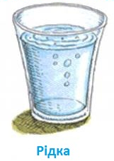
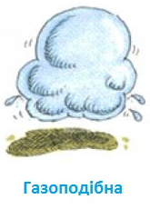
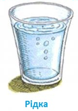
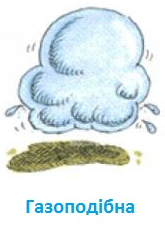

Плазма — стан речовини, в якому її атоми іонізовані, тобто електрони відірвані від ядер. Завдяки цьому речовина стає не тільки електропровідною, але й надзвичайно чутливою до електромагнітних полів. Плазму називають четвертим агрегатним станом речовини на відміну від твердого, рідкого та газоподібного. На відміну від газу або рідини, в плазмі має місце далекосяжна кулонівська взаємодія між частинками, що і визначає її різноманітні властивості. Плазмові об'єкти у природі — зорі, планетарні туманності, верхні шари атмосфери — йоносфера. Штучно плазма створюється у тліючому газовому розряді, газорозрядних лампах, мас-спектрометрах, термоядерному синтезі, при роботі йонних двигунів, генераторів і т. д. Зокрема, плазму застосовують у термоелектронних і магнітоплазмодинамічних (МПД) генераторах — перетворювачах тепла безпосередньо в електричну енергію (минаючи перетворення в механічну).
Плазмова лампа — декоративний прилад, що складається зазвичай зі скляної сфери із встановленим усередині електродом. На електрод подається змінна висока напруга з частотою близько 30 кГц. Усередині сфери створюють розрідження (для зменшення напруги пробою) і закачують суміш газів (для додання «блискавок» визначеного кольору). Плазмова лампа — винахід Ніколя Тесли (1894 рік).